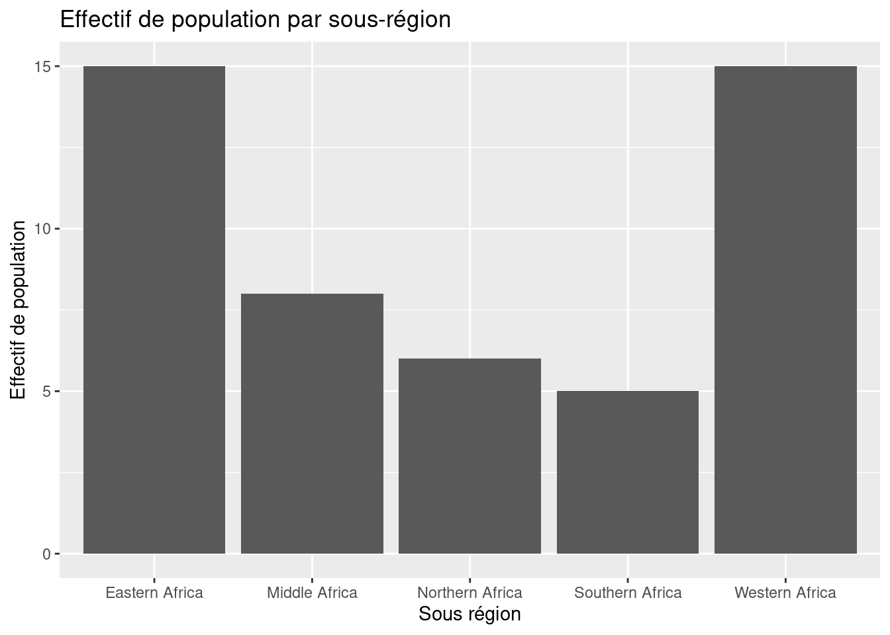
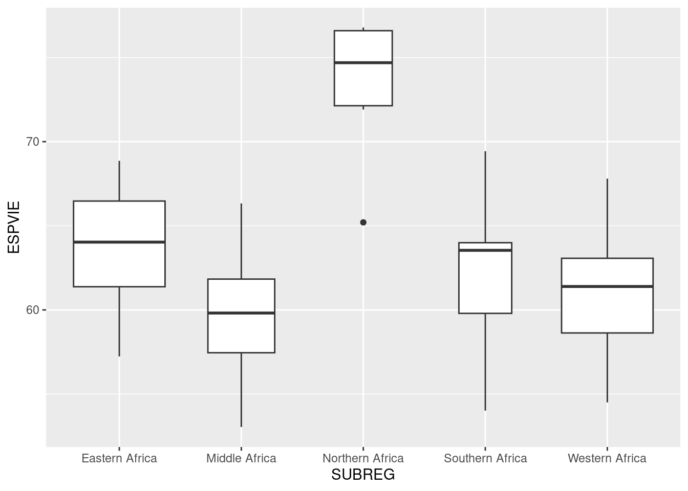

library(tidyverse)
# Import des métadonnées
metaDataDEVAFRICA <- read.table(file = "data/DEV_AFRICA_2018/afrika_don_meta.csv",
header = TRUE,
sep= ";",
encoding = "UTF-8")
library(readxl)
DevAfrica2018 <- read_excel("data/DEV_AFRICA_2018/afrika_don.xls")Application Tidyverse & ggplot2
Exercice 1 ~ Application Tidyverse
1. Importer la base de données DEV_AFRICA_2018 sous le nom DevAfrica2018
2. Sélectionner la liste des pays et leur region d’appartenance
# Sélection de la liste des pays et leur region d'appartenance
DevAfrica2018 %>%
select(nom, SUBREG)# A tibble: 49 × 2
nom SUBREG
<chr> <chr>
1 Angola Middle Africa
2 Burundi Eastern Africa
3 Bénin Western Africa
4 Burkina Faso Western Africa
5 Botswana Southern Africa
6 Rep. Centrafricaine Middle Africa
7 Côte d'Ivoire Western Africa
8 Cameroun Middle Africa
9 Congo, Rép. dém. du Middle Africa
10 Congo Middle Africa
# ℹ 39 more rows3. Quelles sont les variables de la base de données dont le nom commence par la lettre “P”
# Select ion de colonnes par nom : sélectionner les variables dont le nom commencent par "P"
DevAfrica2018 %>%
select(starts_with("P"))# A tibble: 49 × 2
POP PIB
<dbl> <chr>
1 31.3 6793.7084905000002
2 11.4 756.59407529999999
3 11.6 3224.0433155000001
4 20.0 2160.5894579999999
5 2.28 17700.315175
6 4.71 938.98882209999999
7 25.4 5133.5904630000005
8 25.5 3628.1176970000001
9 85.4 1091.9212769999999
10 5.31 3356.2418290000001
# ℹ 39 more rows4. Quelles sont les variables de la base de données dont le nom contient la lettre “P”
# sélectionner les variables dont le nom contient la lettre "P"
DevAfrica2018 %>%
select(contains("P"))# A tibble: 49 × 5
POP PIB EMPAGR EMPSER ESPVIE
<dbl> <chr> <dbl> <dbl> <dbl>
1 31.3 6793.7084905000002 50.4 41.4 61.0
2 11.4 756.59407529999999 92.0 6.50 61.4
3 11.6 3224.0433155000001 38.9 42.1 61.6
4 20.0 2160.5894579999999 25.6 40.9 61.4
5 2.28 17700.315175 20.9 61.0 69.4
6 4.71 938.98882209999999 77.4 17.2 53.0
7 25.4 5133.5904630000005 40.5 46.5 57.6
8 25.5 3628.1176970000001 43.8 41.4 59.1
9 85.4 1091.9212769999999 65.6 24.7 60.5
10 5.31 3356.2418290000001 34.4 43.7 64.4
# ℹ 39 more rows5. Renommer la variable “PIB” en “ProduitInterieurBrut”
# Renommer la variable "PIB" par "ProduitInterieurBrut"
DevAfrica2018 %>%
rename(ProduitInterieurBrut = PIB)# A tibble: 49 × 26
iso3 name nom POP ProduitInterieurBrut IDH ADOFEC CO2HAB EMPAGR
<chr> <chr> <chr> <dbl> <chr> <chr> <dbl> <dbl> <dbl>
1 AGO Angola Ango… 31.3 6793.7084905000002 0.58… 153. 1.12 50.4
2 BDI Burundi Buru… 11.4 756.59407529999999 0.432 56.2 0.0467 92.0
3 BEN Benin Bénin 11.6 3224.0433155000001 0.54… 87.4 0.622 38.9
4 BFA Burkina Fa… Burk… 20.0 2160.5894579999999 0.44… 106. 0.197 25.6
5 BWA Botswana Bots… 2.28 17700.315175 0.73… 46.3 2.96 20.9
6 CAF Central Af… Rep.… 4.71 938.98882209999999 0.39… 130. 0.0651 77.4
7 CIV Côte d'Ivo… Côte… 25.4 5133.5904630000005 0.53… 118. 0.335 40.5
8 CMR Cameroon Came… 25.5 3628.1176970000001 0.56… 108. 0.323 43.8
9 COD Dem. Rep. … Cong… 85.4 1091.9212769999999 0.47… 125. 0.0242 65.6
10 COG Congo Congo 5.31 3356.2418290000001 0.57… 113. 0.616 34.4
# ℹ 39 more rows
# ℹ 17 more variables: EMPSER <dbl>, INTERN <dbl>, ESPVIE <dbl>, AGEMED <dbl>,
# TELMOB <dbl>, MORINF <dbl>, TXMIGR <dbl>, DVIEUX <dbl>, TUBERC <dbl>,
# URBANI <dbl>, DJEUNE <dbl>, SUBREG <chr>, LOCKED <dbl>, COLFRA <dbl>,
# COLGBR <dbl>, LANGFR <dbl>, LANGEN <dbl>6. Calculer le taux de dépendance jeune par sous-région
# Proportion (Pourcentage) de jeunes par sous région
DevAfrica2018 %>%
group_by(SUBREG) %>%
summarise(depJeune = mean(DJEUNE))# A tibble: 5 × 2
SUBREG depJeune
<chr> <dbl>
1 Eastern Africa 77.3
2 Middle Africa 79.3
3 Northern Africa 49.1
4 Southern Africa 55.8
5 Western Africa 79.67. Ordonner les pays par sous région
# Trier les pays par niveau de PIB croissant
DevAfrica2018 %>%
arrange(desc(SUBREG))# A tibble: 49 × 26
iso3 name nom POP PIB IDH ADOFEC CO2HAB EMPAGR EMPSER INTERN ESPVIE
<chr> <chr> <chr> <dbl> <chr> <chr> <dbl> <dbl> <dbl> <dbl> <dbl> <dbl>
1 BEN Benin Bénin 11.6 3224… 0.54… 87.4 0.622 38.9 42.1 20 61.6
2 BFA Burk… Burk… 20.0 2160… 0.44… 106. 0.197 25.6 40.9 16 61.4
3 CIV Côte… Côte… 25.4 5133… 0.53… 118. 0.335 40.5 46.5 46.8 57.6
4 GHA Ghana Ghana 30.1 5303… 0.60… 67.3 0.615 29.8 48.7 39 63.9
5 GIN Guin… Guin… 12.6 2531… 0.47… 137. 0.256 62.0 31.9 18 61.4
6 GMB Gamb… Gamb… 2.31 2175… 0.49… 79.8 0.268 27.4 56.9 19.8 61.9
7 GNB Guin… Guin… 1.90 1969… 0.47… 105. 0.181 68.3 24.7 3.93 58.2
8 LBR Libe… Libé… 4.88 1462… 0.47… 136. 0.323 43.4 46.3 7.98 63.9
9 MLI Mali Mali 19.4 2305… 0.43… 170. 0.187 62.8 29.6 13 59.1
10 MRT Maur… Maur… 4.46 5119… 0.54… 72.0 0.604 51.7 35.5 20.8 64.8
# ℹ 39 more rows
# ℹ 14 more variables: AGEMED <dbl>, TELMOB <dbl>, MORINF <dbl>, TXMIGR <dbl>,
# DVIEUX <dbl>, TUBERC <dbl>, URBANI <dbl>, DJEUNE <dbl>, SUBREG <chr>,
# LOCKED <dbl>, COLFRA <dbl>, COLGBR <dbl>, LANGFR <dbl>, LANGEN <dbl>Exercice 2 : Application ggplot2
1. Recoder la variable « POP » en « Population » en trois catégories :
- Moins de 10 millions,
- 10 -- 25 millions,
- > 25 millions.
# Recodage de la variable
DevAfrica2018$Population <- cut(DevAfrica2018$POP,
breaks = c(1,10,25,200),
labels = c("Moins de 10 millions",
"10 - 25 millions",
"> 25 millions"),
right = F)2. Représentation graphique de l’effectif des pays par sous-région
library(ggplot2)
ggplot(DevAfrica2018) +
geom_histogram(aes(x=SUBREG), stat = 'count')3. Ajout des étiquettes (titre du graphique, étiquette axe abscisse, axe des ordonnées) au graphique.
ggplot(DevAfrica2018) +
geom_histogram(aes(x=SUBREG), stat = 'count')+
ggtitle("Effectif de population par sous-région")+
xlab("Sous région") +
ylab("Effectif de population")
4. Construction d’une boite à moustaches de l’espérance de vie à la naissance par sous-région.
ggplot(DevAfrica2018) +
geom_boxplot(aes(x=SUBREG, y=ESPVIE))5. Construction d’une boite à moustache de l’espérance de vie à la naissance par sous-région. Note : faites les largeurs des boites à moustaches proportionnelles à l’effectif de la population par sous-région.
ggplot(DevAfrica2018) +
geom_boxplot(aes(x=SUBREG, y=ESPVIE), varwidth = TRUE)
6. Ajout des étiquettes (titre du graphique, étiquette axe abscisse, axe des ordonnées) au graphique.
figure1 <- ggplot(DevAfrica2018) +
geom_boxplot(aes(x=SUBREG, y=ESPVIE), varwidth = TRUE) +
xlab("Sous région") +
ylab("Espérence de vie à la naissance") +
ggtitle("Expérance de vie à la naissance par sous-règion")
# Sauvegarde du graphique
ggsave("figure1.png", dpi = 3000)Saving 7 x 5 in image